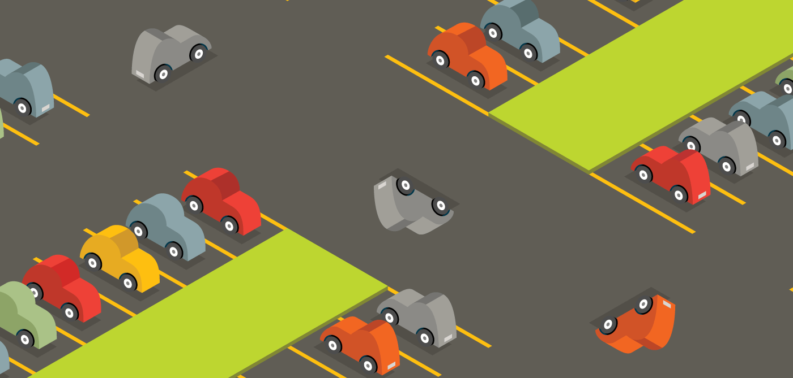

To give back to our fantastic Driver community, we partnered with ParkWhiz to make it easier for Drivers to find parking around the city. This piece was fun to work on because it was my first time working on a large isometric piece. The hardest part of this was how to make curves feel at home on the grid.
One of my favorite things to do, when first showing the concept to colleagues, was to flip a few of the cars and mess with the perspective. They didn't like it too much but it was fun to see the reactions :)
